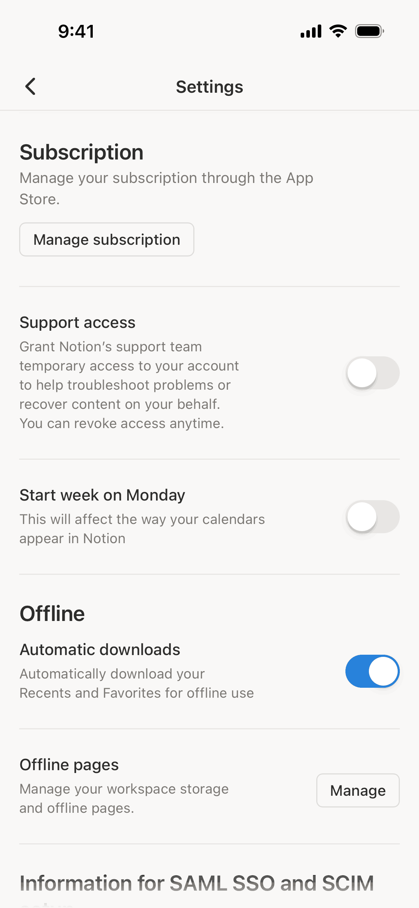
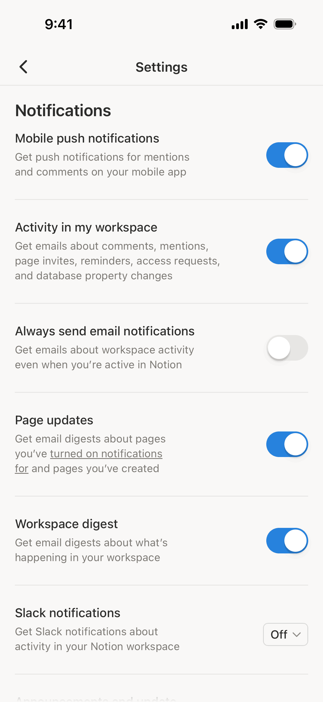
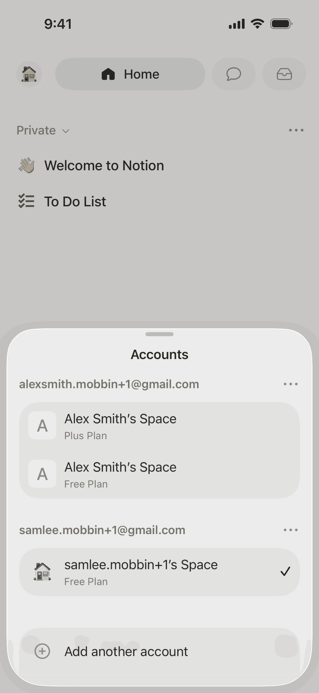

设置页普遍采用分组列表结构，账号信息与工作区设置分区呈现，文字层级靠字号与灰色区分。
来源：Notion (3 screens)
iOS · 2026-08-13 · 目标：设置页布局与层级参考

查看 Mobbin 原文 ↗设置页：账号与偏好设置

查看 Mobbin 原文 ↗设置页：工作区与通知

查看 Mobbin 原文 ↗设置页：成员与权限
其余参考屏幕（点击查看大图）
设置页普遍采用分组列表结构，账号信息与工作区设置分区呈现，文字层级靠字号与灰色区分。
来源：Notion (3 screens)
设置入口的位置不一：Notion 采用侧边栏底部头像入口，MyFitnessPal 使用顶部导航栏入口。
来源：Notion vs MyFitnessPal
深色模式下设置页保持浅色表面，与主界面深色形成对比，聚焦内容区；Evernote 同样在设置页保持高对比列表。
来源：Notion, Evernote
设置页沿用分组列表 + 底部头像入口的成熟模式；深色模式下保持内容区浅色表面以聚焦。